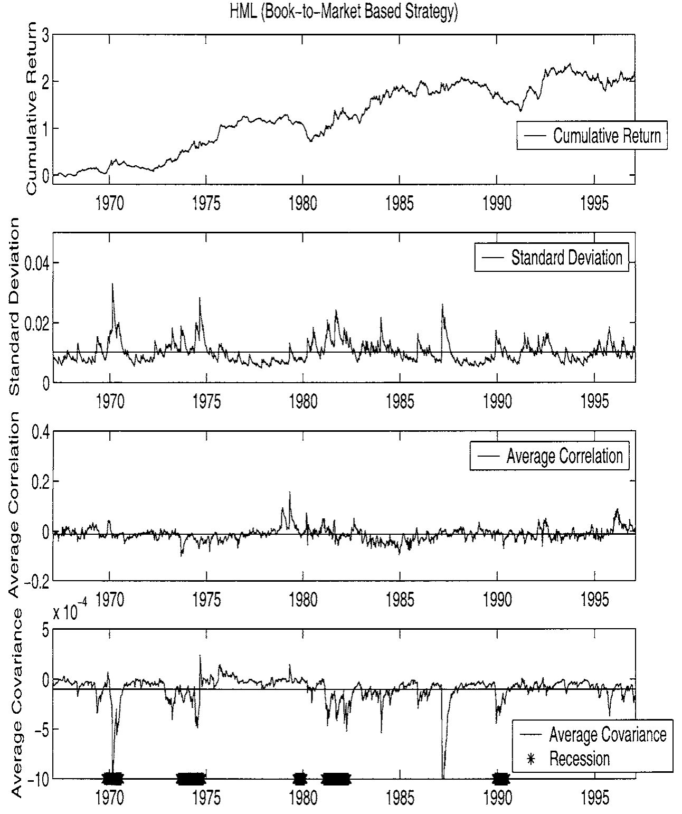
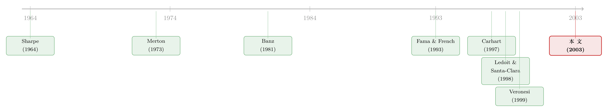

三个异象，为什么命运不同？——把它们一个个拖到『协方差』面前对质
本文读的是 Moskowitz (2003, Review of Financial Studies)：作者把规模、账面市值比、动量这三个最有名的「异象」，逐一放到收益率的协方差结构面前对质，发现它们与协方差风险的关系强弱悬殊——规模强、账面市值比弱、动量几乎为零。规模因子能预测未来的波动与协动，且当它自身波动和协动上升时溢价随之上升，衰退里尤甚；其余两者都没有这种关系。这把同被 CAPM 判作「异象」的三兄弟，按是否像「风险」重新排了座次。
1 同一个法庭，被告却各不相同
先把场景摆出来。
过去三四十年，资产定价里最热闹的官司只有一桩：规模 (size)、账面市值比 (book-to-market)、动量 (momentum) 这三个公司特征，都能预测股票的横截面平均收益，可它们都解释不进 资本资产定价模型 (capital asset pricing model, CAPM) 的市场 β 里去。于是它们被统统冠以「异象 (anomaly)」之名，关进了同一间牢房。
接着，争论就围着一个问题打转：这些超额收益，到底是风险补偿，还是错误定价？支持风险的人说，CAPM 的单 β 不够用，换成 Merton (1973) 的跨期 CAPM 或 Ross (1976) 的套利定价理论 (arbitrage pricing theory, APT)，这些特征不过是在替多因子风险打工；支持错误定价的人说，不，这是投资者的非理性留下的免费午餐。两边都拿着收益数据反复对质，谁也说服不了谁——因为这是一桩 市场有效性与均衡模型的联合检验，天生难以了断。
但你有没有注意到，所有人都只盯着同一样东西：收益的第一矩，也就是平均收益。
这正是本文的切入口。作者说，我们吵了几十年的，全是「这些特征能不能预测平均收益」；可几乎没有人问过：这些特征，和收益的第二矩——也就是方差、协方差——又是什么关系？ 而第二矩在资产定价里的分量,丝毫不比第一矩轻。如果一个特征所对应的策略，本身就承担了大量随时间变化的协方差风险，那它的溢价就更像「风险的价钱」；如果它和协方差结构毫无瓜葛，风险解释这条路就走不通。
于是问题被漂亮地转了个方向：不是问「它们能不能赚钱」，而是问「它们赚的这份钱，要不要替协方差风险背书」。 把三个被告一个个拖到协方差这面镜子前，看谁照得出风险的影子。
这就是全文的那「一个核心」。下面我们顺着它走。
2 识别策略：先得有一台会「呼吸」的协方差矩阵
要回答这个问题，第一步反而不是回归，而是得先把「随时间变化的协方差矩阵」估出来。这是整篇文章的地基，也是它真正的技术含量所在。
为什么非要「时变」？因为大量证据早就表明，波动率是可以预测的、是序列相关的——French, Schwert, and Stambaugh (1986) 与 Schwert (1989) 都记录了股票波动率随时间起伏。如果用一个固定不变的样本协方差矩阵去衡量「风险」，等于假装风险从不呼吸，那本文想问的问题根本无从谈起。
作者用的是 广义自回归条件异方差 (generalized autoregressive conditional heteroskedasticity, GARCH) 模型。单看一只资产的波动好办，难的是要同时刻画 32 只资产之间整张协方差矩阵 的动态。多元 GARCH 的参数个数是
$$ \frac{3N(N+1)}{2} $$
随资产数 \(N\) 暴涨。传统做法只能往参数矩阵上硬加约束（比如「常相关」假设），可那恰恰会把作者最想看的东西——相关系数本身的时变——给假设掉了。
真正关键的一步，是作者借用了 Ledoit and Santa-Clara (1998) 的多元 GARCH(1,1)。它的模型写法是：
$$ H_t = C + A^{*}\,\epsilon_{t-1}\epsilon_{t-1}' + B^{*}\,H_{t-1} $$
$$ \epsilon_t = R_t - E_{t-1}[R_t] $$
其中 \(R_t\) 是 \((N\times 1)\) 的资产收益向量，\(E_{t-1}[\cdot]\) 是基于 \(t-1\) 期信息的条件期望，\(H_t\) 就是我们要的那台会呼吸的条件协方差矩阵。它的妙处在于：不对参数矩阵额外加结构，却又能估出大维矩阵——具体做法是对每一对资产（\(N=2\)）单独估出 \(C\)、\(A\)、\(B\)，再把这些两两估计向「保证正定且协方差平稳」的参数空间做最小化「距离」（Frobenius 范数）的投影。换句话说，它用「逐对估计 + 重采样拼装」的办法，绕开了维数灾难。
把这个最核心的递推式拆开来看：
直觉很朴素：今天的风险 = 一个长期锚 \(C\) + 昨天的「惊吓」\(\epsilon_{t-1}\epsilon_{t-1}'\) 留下的余波 + 昨天风险水平 \(H_{t-1}\) 的延续。Andersen and Bollerslev (1998) 发现，GARCH 大约能解释事后波动率变化的 50%——对于「把风险当成会呼吸的东西」这件事，它够用了。模型用极大似然估计，并以单位矩阵作 \(H_0\) 的起点（作者声明结果对起点稳健）。
有了这台机器，本文后续的全部检验——某个特征因子能不能解释 \(H_t\)、能不能预测下一期的 \(H_{t+1}\)、它的溢价随不随 \(H_t\) 起伏——才有了立足之地。这一点务必记住：本文的「识别」，不是某个外生冲击，而是「把时变协方差当作可观测对象」这件事本身。 这既是它的力量，也是它最大的软肋（后面再谈）。
3 数据：32 块「积木」
这里有个常被忽略的取舍：作者故意不用个股，而用充分分散的组合做基础资产。
样本是 CRSP 上 NYSE、AMEX、NASDAQ 全部上市股票，外加 COMPUSTAT 的账面权益，区间 1963 年 8 月到 1997 年 12 月；因动量策略需要一年的历史，正式分析从 1964 年 8 月 开始。频率用的是周度（周三到周三收盘），这是个精心的折中：日度数据能提高高维 GARCH 的估计精度，但会引入买卖价差跳动、非同步交易等微观结构噪声；周三对周三又能避开周一、周五已知的高/低自相关。
条件协方差矩阵是为 32 只「代表性」资产 估的：20 个按两位 SIC 分的行业组合、6 个规模×账面市值比组合、CRSP 市值加权指数（超额于国库券利率），以及 5 个按过去一年收益分的组合。三个因子也由此构造：规模因子 SMB、账面市值比因子 HML 都与 Fama and French (1993) 完全一致；动量则用类 Carhart (1997) 的 PR1YR，外加 Moskowitz and Grinblatt (1999) 的行业动量 IM。
为什么不用个股？因为个股收益噪声太大，会把协方差的估计误差放大到「无法做可靠推断」的地步——作者在脚注里坦言，早期版本试过随机个股，结果估计误差「摧毁了识别共同变动的能力」。用分散组合是拿「无法完整刻画真实横截面」换「能可靠地谈第二矩」，这笔账，对一篇专攻协方差的文章来说划得来。行业组合还有个额外好处：同行业公司面对相似的监管、供给、需求冲击，组内协动天然更强，正好拉开了截面上协动的离散度。
4 反转之一：会预测风险的，是规模，不是别的
地基打好，戏就开场了。
作者先问最直接的问题：在这 32 只资产里，谁是协方差矩阵的主要贡献者？ 答案毫不意外却又意味深长——市场组合是单个最重要的因子。这本身就是对「市场 β 无用论」的一记温柔提醒：在第一矩里被异象压着打的市场组合，在第二矩里却是绝对主角。
接着，一个自然的问题是：三个特征因子里，谁还能在市场之外，额外解释协方差？
这里出现了全文第一个反转：规模因子（SMB）对当期和未来的第二矩都有显著的解释力；账面市值比（HML）的解释力——无论样本内还是样本外——都更弱；而动量的解释力可以忽略不计。 更进一步，在样本外预测未来第二矩时，「市场 + 规模 + 账面市值比」的组合，竟然打败了从主成分分析里统计地提取出来的因子。也就是说，这些有经济含义的特征因子，在预测「将来风险」这件事上，比纯统计因子更靠谱。
这一步为什么重要？因为它把「特征能否当作条件协动的工具变量」这个老问题，落到了实处——与 Shanken (1990)、Ferson and Harvey (1997, 1999)、Lewellen (1999) 一脉相承。规模，第一次像一个真正的风险代理那样工作了。
5 反转之二：规模的溢价，会「看天」
但真正关键的一步，还在后面。
预测风险只是第一层。本文最锋利的检验是第二层：当一个因子自身的波动、以及它与其他资产的协动上升时，它未来的溢价会不会跟着涨？ 这才是「风险被定价」的核心含义——承担更多风险的时候，理应要求更高的回报。
于是反转出现了，而且来得干净利落：
- 波动一头。 波动率在低消费状态（如衰退）里升高，而规模溢价随之上升；账面市值比和动量，没有这种关系。
- 协动一头。 当规模因子与经济中其他资产协动更强时，它未来的溢价也更高（已控制波动率效应）；同样，账面市值比和动量，还是没有。
两条线都指向同一个结论：规模效应有一副「风险」的面孔。它在衰退里波动更大、协动更强，而投资者恰恰在这种时候——消费最紧、最需要预报的时候——要求规模因子付出更高的溢价。这正是 Veronesi (1999)、Ribeiro and Veronesi (2001) 那类理性预期模型所预言的图景。而且所有这些效应在衰退里都被放大了：条件相关与波动率都在衰退期最高，1987 年 10 月崩盘时更是一起「爆表」（这与 Roll (1988)、Ang and Chen (2001) 的发现一致）。
Figure 3 把这层关系画了出来：它呈现的是各特征所对应的收益溢价与其协方差风险之间的关联——一种「宽泛但清晰」的正向对应，而这种对应主要存在于规模一端。

Figure 3: indicates a broad association between the return premia on the
到这里，全文那「一个核心」终于落地：同被 CAPM 判作异象的三兄弟，命运并不相同。 规模像风险，账面市值比沾点边，动量则几乎与协方差风险绝缘——它的利润，得去别处找解释。（关于动量更可能藏在交易行为而非协方差里，可参见《动量到底是谁干的？——把成交单拆成大小两摞来看》；关于 β 在收编价值与规模、动量却躲进商业周期这一姊妹结论，可参见《会「看天」的 beta》。）
6 一个「副产品」：会呼吸的协方差，真能省钱
在异象官司之外，本文还顺手交出一份很实在的投资证据，值得单说。
作者用每周更新的条件协方差矩阵，构造最小方差组合 (minimum variance portfolio, MVP)。无约束的 MVP 会给出荒唐的权重——最大权重能到 80，也就是 8000% 的多头！显然不可用。于是加上「不许做空、单一资产权重不超过 100%」的约束，权重立刻变得温顺稳定。
代价当然是样本内效率打折，但有意思的是：无约束 MVP 的样本内最小方差，平均只比受约束的小约三分之一，有些时期两者几乎重合。而到了真正要紧的样本外：
- 受约束 MVP 的事后年化标准差为
10.3%； - 无约束 MVP 高达
14.8%； - 作为参照，整段样本用无条件样本协方差矩阵得到的 MVP 是
12.1%。
也就是说，「会呼吸」的条件协方差里，藏着能真金白银降低组合波动的信息——与 Fleming, Kirby, and Ostdiek (2000) 的发现一致。这条「副产品」其实给前面的主结论加了分：既然时变协方差能改善投资效率，那么用它来给异象做协方差体检，就更站得住脚了。
7 文献脉络
把这条线捋一捋，本文的位置就清楚了。
最早，是 Sharpe (1964)、Lintner (1965)、Black (1972) 立起 CAPM，把市场 β 奉为唯一的风险尺度。随后异象一个个冒出来：Banz (1981) 的规模、Stattman (1980) 与 Rosenberg, Reid, and Lanstein (1985) 的账面市值比、Jegadeesh and Titman (1993) 的动量，把单 β 逼到墙角。Fama and French (1993, 1996) 用三因子把规模和价值收编进模型，Carhart (1997) 再补上动量因子——但这些都仍在第一矩里做文章。
与此并行的，是另一条「第二矩」的暗线：French, Schwert, and Stambaugh (1986)、Schwert (1989) 记录波动率的时变与序列相关，Bollerslev, Chou, and Kroner (1992)、Andersen and Bollerslev (1998) 把 GARCH 推向成熟，Ledoit and Santa-Clara (1998) 终于让大维协方差矩阵的动态估计成为可能。理论一侧，Veronesi (1999)、Ribeiro and Veronesi (2001) 给出了「坏时光里协动飙升、风险溢价随之走高」的理性预期机制。

本文 Moskowitz (2003) 恰好是这两条线的交汇点：它借第二矩的工具（多元 GARCH），去审第一矩的悬案（三大异象），把「特征—协方差—溢价」三者串成一条可检验的链，并据此给规模效应贴上风险解释、给动量贴上「非协方差」的标签。
8 评论与延伸（Q&A + 研究方向）
(a) 几个可能的疑问
Q：这不就是 Fama-French 三因子吗？多估个 GARCH 有什么新意？
不一样。三因子做的是第一矩的横截面定价；本文几乎不碰平均收益的拟合，而是问这些因子与第二矩（方差、协方差）的关系，以及溢价是否随自身的条件二阶矩起伏。换句话说，FF 问「能不能解释收益」，本文问「这份收益要不要替风险背书」。
Q：把 GARCH 估出的协方差当成「真实」协方差，会不会太想当然？
这是本文最该担心的地方，作者自己也承认（专门用附录讨论估计精度与稳健性）。整套推断都建立在「\(H_t\) 估得足够准」之上；若 Ledoit–Santa-Clara 的重采样拼装在某些时期有偏，关于「谁能预测协动」的结论就会被污染。这不是外生冲击式的干净识别，而是一种「测量即识别」，软肋正在于此。
Q：动量「与协方差无关」，是不是只说明 GARCH 抓不住动量的风险？
有这个可能。动量的风险更可能是非线性的、状态依赖的（比如「动量崩盘」），而 GARCH(1,1) 刻画的是相对平滑的二阶矩动态。所以「动量协方差风险可忽略」更稳妥的读法是：在本文这台机器的分辨率下看不到，而非断言它绝对没有风险来源。
Q：为什么用组合而不用个股？会不会丢掉关键信息？
用个股会让协方差估计误差爆炸，无法做可靠推断；用 32 个分散组合是拿「不能完整刻画真实横截面」换「能可靠谈第二矩」。代价是：若异象的协方差风险主要藏在个股层面的特质协动里，组合化可能恰好把它平滑掉了。
Q：所有结论都在衰退里被放大，这是发现还是假象？
大概率是真发现：条件相关与波动率确实在衰退、在 1987 年崩盘时一起飙升，这与 Roll (1988)、Ang and Chen (2001) 独立证据吻合。但要注意，样本里 NBER 衰退期占比很小，「衰退放大」这部分结论的统计功效，天然弱于全样本结论。
Q：那么本文到底证明了规模效应是「风险」吗？
没有「证明」，只是把天平往风险一侧推了一格。它给出的是「与风险解释相容」的一组事实：规模因子能预测协动、其溢价随协动与波动上升。但这与「错误定价也能产生时变的协动」并不互斥——本文坦诚自己无法、也不试图终结这场争论。
(b) 几个可能的研究问题与提案
1. 把这台「协方差体检」搬到公司债市场。 【经济故事】公司债的横截面也有规模、价值类（如信用利差、久期）效应，而债券收益的协方差结构与违约、流动性高度相关。问同样的问题——哪个债券特征能预测未来协动、其溢价是否随协动起伏——可能比股票更干净，因为债券协方差与宏观状态的联系更直接。 【可行性】中。数据可用 TRACE + Mergent FISD 构造债券组合；难点是债券交易稀疏，周度协方差估计噪声大，需借鉴本文「用分散组合」的思路并配合更稳健的协方差估计器。
2. 外资持有人会不会改变一只资产的「协动季节」？ 【经济故事】外资在坏时光里集中撤离，可能系统性抬高被其重仓资产之间的条件相关。若如此，「可投资度」这类特征就该像本文的规模因子一样，预测未来协动、并对应一份风险溢价。 【可行性】中。需各国持股/可投资度面板（如 FactSet/EM 数据）配合多元 GARCH；识别上可借外资准入的分阶段放开做准自然实验，强于纯时序相关。
3. 把动量换成「动量崩盘」的尾部协动来重测。 【经济故事】本文用 GARCH(1,1) 没在动量里找到协方差风险，但动量的风险也许是尾部的、非线性的。用条件下行 β 或跳跃协动重做，或许能让动量的「风险面孔」显形。 【可行性】高。数据现成（CRSP 因子），只需把二阶矩估计换成下行/跳跃版本；这是一个低成本、可直接落地的复制—延伸。
4. 流动性维度上的「协方差体检」。 【经济故事】异象多空组合往往并非流动性中性；若一个特征的溢价随其流动性协动（与市场流动性的共动）起伏，那它的溢价里就掺了流动性风险的成分，而非纯协方差风险。 【可行性】中。可在本文框架里把流动性度量加入基础资产集，估计「收益—流动性」联合协方差；难点是流动性度量本身的测量误差。（这一思路与《流动性的方向感：异象多空组合，其实并不「流动性中性」》相承。）
9 我的判断与参考文献
贡献。 本文最大的价值，是给「风险还是错误定价」这场陈年官司换了个审讯角度——不再纠缠平均收益，而是问特征与第二矩的关系。这个转向本身就很聪明：它把一个几乎无解的联合假设问题，部分地转化为一个可测量、可证伪的协方差问题，并干净利落地把三个异象排出了「像不像风险」的座次。它顺带产出的「时变协方差能省真金白银」（10.3% vs 14.8%）那组数字，也是扎实的副产品。
对识别的担忧。 它的命门是「测量即识别」：一切都押在 GARCH 协方差估得准这个前提上，而这既无外生冲击、也无安慰剂可做。一旦 \(H_t\) 在关键时期（恰恰是衰退、崩盘这些最有信息量的时期）估得有偏，关于「谁预测协动、谁的溢价随协动走」的结论就会被动摇。此外，「动量无协方差风险」很可能只是 GARCH(1,1) 分辨率下的盲区，而非定论。
后续想看到什么。 我最想看到的，是把这套体检搬到协方差与宏观状态联系更直接的市场——尤其是公司债与外资持有人维度（见上文提案 1、2），并用下行/尾部协动替代对称 GARCH，去检验动量的「风险面孔」到底是真不存在，还是被工具藏了起来。如果在更高分辨率的二阶矩下，规模依旧像风险、动量依旧不像，那本文的座次就更值得信了。
参考文献
- Andersen, T., and T. Bollerslev (1998). Answering the Skeptics: Yes, Standard Volatility Models Do Provide Accurate Forecasts. International Economic Review 39, 885–905.
- Ang, A., and J. Chen (2001). Asymmetric Correlations of Equity Portfolios. Journal of Financial Economics (forthcoming).
- Banz, R. W. (1981). The Relationship Between Return and Market Value of Common Stocks. Journal of Financial Economics 6, 103–126.
- Black, F. (1972). Capital Market Equilibrium With Restricted Borrowing. Journal of Business 45, 444–455.
- Bollerslev, T., R. Chou, and K. Kroner (1992). ARCH Modeling in Finance. Journal of Econometrics 52, 5–59.
- Carhart, M. (1997). On Persistence in Mutual Fund Performance. Journal of Finance 52, 57–82.
- Fama, E. F., and K. R. French (1993). Common Risk Factors in the Returns on Stocks and Bonds. Journal of Financial Economics 53, 427–465.
- Fama, E. F., and K. R. French (1996). Multifactor Explanations of Asset Pricing Anomalies. Journal of Finance 51, 55–84.
- Fleming, J., C. Kirby, and B. Ostdiek (2000). The Economic Value of Volatility Timing. Journal of Finance (forthcoming).
- French, K. R., G. W. Schwert, and R. Stambaugh (1986). Expected Stock Returns and Volatility. Journal of Financial Economics 19, 3–29.
- Jegadeesh, N., and S. Titman (1993). Returns to Buying Winners and Selling Losers: Implications for Stock Market Efficiency. Journal of Finance 48, 65–91.
- Ledoit, O., and P. Santa-Clara (1998). Estimating Large Conditional Covariance Matrices with an Application to International Stock Markets. Working paper, UCLA.
- Lintner, J. (1965). The Valuation of Risk Assets and the Selection of Risky Investments in Stock Portfolios and Capital Budgets. Review of Economics and Statistics 47, 13–37.
- Merton, R. C. (1973). An Intertemporal Capital Asset Pricing Model. Econometrica 41, 867–887.
- Moskowitz, T. J. (2003). An Analysis of Covariance Risk and Pricing Anomalies. Review of Financial Studies 16(2), 417–457.
- Moskowitz, T. J., and M. Grinblatt (1999). Do Industries Explain Momentum? Journal of Finance 54, 1249–1290.
- Ribeiro, R., and P. Veronesi (2001). Excess Comovement of International Stock Markets in Bad Times. Working paper, University of Chicago.
- Roll, R. (1988). The International Crash of October, 1987. Financial Analysts Journal September–October, 19–35.
- Rosenberg, B., K. Reid, and R. Lanstein (1985). Persuasive Evidence of Market Inefficiency. Journal of Portfolio Management 11, 9–17.
- Ross, S. (1976). The Arbitrage Theory of Capital Asset Pricing. Journal of Economic Theory 13, 341–360.
- Schwert, G. W. (1989). Why Does Stock Market Volatility Change Over Time? Journal of Finance 44, 1115–1153.
- Sharpe, W. F. (1964). Capital Asset Prices: A Theory of Market Equilibrium Under Conditions of Risk. Journal of Finance 19, 425–442.
- Stattman, D. (1980). Book Values and Stock Returns. Chicago MBA: A Journal of Selected Papers 4, 25–45.
- Veronesi, P. (1999). Stock Market Overreaction to Bad News in Good Times: A Rational Expectations Equilibrium Model. Review of Financial Studies 12, 975–1007.